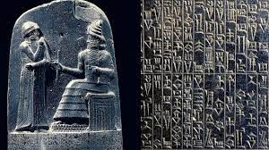
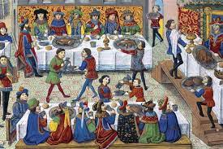

Antigua Grecia
surge una asociación llamada “Erandi” o “Eranoi” en la que se da asistencia a los socios y sus familias a través de un fondo común constituido por los agremiados.

Se menciona como primer antecedente el “Código de Hammurabi”, Rey de Babilonia 1955-1912 A.C. que ya preveía indemnizaciones en caso de fallecimiento por accidente de trabajo a favor de la viuda y de los descendientes del fallecido, instrumentándolas a través de un sistema de mutualización.
Se creaban asociaciones en las que sus socios pagaban una cuota para que en el momento de su muerte el resto de miembros pagara sus caros ritos funerarios y el consuelo de la familia, asegurándose así de tener cubiertas las ceremonias para garantizar el tránsito de este mundo al más allá.
surge una asociación llamada “Erandi” o “Eranoi” en la que se da asistencia a los socios y sus familias a través de un fondo común constituido por los agremiados.
existía una asociación o “Collegia” para los militares en cada una de las Provincias, los miembros pagaban de modo anticipado su contribución a un fondo que atendía los gastos en que incurrían los parientes para proporcionar un entierro decente al fallecido.
surgen también guildas, asociaciones formadas personas del mismo gremio que pagaban una cuota para mantener un fondo de protección mutua que cubría las pérdidas a modo de seguro en caso de que ocurriera algún imprevisto como un incendio, una muerte o la enfermedad. En su desarrollo, las guildas comenzaron a tener en cuenta factores vinculados al riesgo al que están expuestos sus asociados, como sus condiciones de vida y salud, creando para ello las que serán las primeras tarificaciones de seguros de vida en la historia, fueron las primeras en tratar de que la prestación después de que ocurriese un siniestro fuera proporcional al presupuesto disponible y al riesgo asumido, evitando posibles situaciones de insolvencia y de desprotección para los miembros del gremio.
En la misma época, Christian Huyghens estudió el cálculo de probabilidades, cuyas bases fueron establecidas poco antes por un joven de 20 años, inventor de la primera máquina de calcular, y que había de ser famoso como científico y filósofo: Blas Pascal. En 1672, Nicolás Struyck comprueba las estadísticas y, basándose en el resultado de sus estudios, construye la primera Tabla de Mortalidad, que lleva su nombre. Las guerras impiden que en Holanda se prosiga el estudio básico para la ciencia aseguradora. El doctor alemán Neumann forma una estadística de la población de Breslau durante el quinquenio de 1687 a 1691, en la que el inglés Edmund Halley apoya su Tabla de Mortalidad, que parte de una base de 1000 cabezas y en la que se observa la evolución de la supervivencia a todas las edades. Se había colocado así la primera piedra de la ciencia actuarial. Sin embargo, la consolidación científica de las matemáticas actuariales necesitaba aún de las investigaciones de Leibnitz y Newton sobre el cálculo diferencial, indispensable para el desarrollo del cálculo de probabilidades, que da origen al célebre teorema de Jacques Bernouilli sobre la Ley de los grandes números, sin el cual hubiese sido imposible la creación de la ciencia aseguradora moderna.